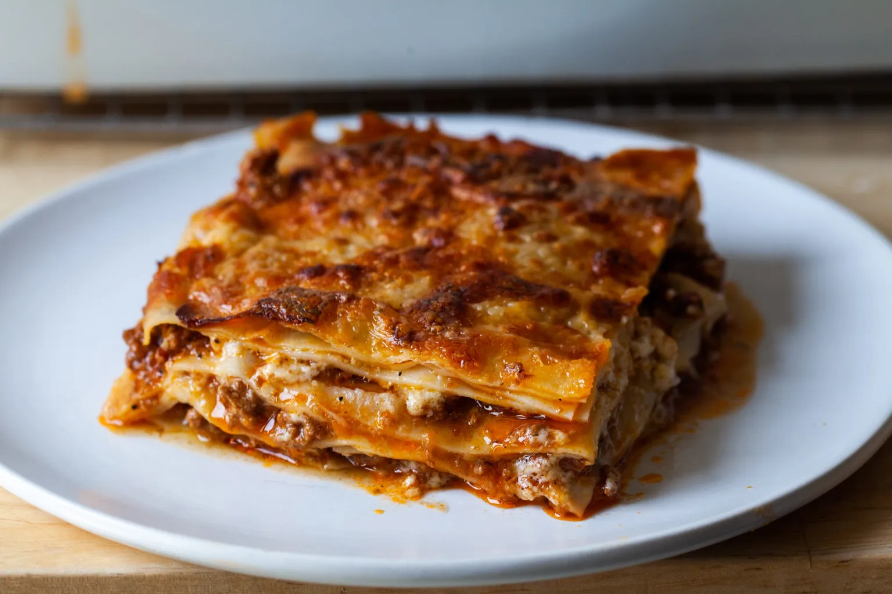

Lasagne Recipe
by Tanel A.
Lasagne originated in Italy during the Middle Ages. The oldest transcribed text about lasagne appears in 1282 in the Memoriali Bolognesi ("Bolognesi Memorials"), in which lasagne was mentioned in a poem transcribed by a Bolognese notary, while the first recorded recipe was set down in the early 14th-century Liber de Coquina (The Book of Cookery). It bore only a slight resemblance to the later traditional form of lasagne, featuring a fermented dough flattened into thin sheets (lasagne), boiled, sprinkled with cheese and spices, and then eaten with a small pointed stick. Recipes written in the century following the Liber de Coquina recommended boiling the pasta in chicken broth and dressing it with cheese and chicken fat. In a recipe adapted for the Lenten fast, walnuts were recommended.

Bolognese Sauce
| Ingridient |
Amount |
| medium onion |
1 |
| large carrot |
1 |
| celery ribs |
2 |
| garlic gloves |
3 |
| kosher salt |
to taste |
| black pepper |
to taste |
| ground beef |
1kg |
| tomato paste |
50g |
| red wine |
500ml |
| water |
as needed |
| bay leaves |
2 |
| sprigs thyme |
2-3 |
Pasta
| Ingridient |
Amount |
| flour |
400g |
| eggs |
2 |
| sea salt |
1/2 teaspoon |
| water |
1-2 tablespoon |
Béchamel sauce
| Ingridient |
Amount |
| butter |
8 tablespoons |
| flour |
200g |
| whole milk |
700ml |
| sea salt |
1 teaspoon |
- Make the bolognese sauce: In a food processor, pulse onion, carrots, celery, and garlic until finely chopped. Heat a moderate-sized Dutch oven (4 to 5 quarts) over medium-high heat. Once hot, coat the bottom of the pan with two to three tablespoons of oil. Once it is hot, add the chopped vegetables and season them generously with salt and pepper. Cook the vegetables until they are evenly brown, stirring frequently, about 15 minutes.
I’m going to insert my favorite Burrell-ism here: Brown food tastes good! Don’t skimp on the cooking times as this creates the big flavors the will carry right through to your plated lasagna. And now I’m going to insert my own-ism: Don’t worry about sticking bits of food or uneven pieces or anything. It’s all going to work out in the end.
Add the ground beef and seasoning again with salt and pepper. Brown the beef well and again, don’t rush this step. Cook for another 15 minutes. Add the tomato paste and cook for 3 to 4 minutes. Add the red wine, using it to scrape up any stuck bits in the pan. Cook the wine until it has reduced by half, about 5 more minutes. Add water to the pan until the water is about 1 inch above the meat. Toss in the bay leaves and the bundle of thyme and stir to combine everything, bringing it to a low simmer.
Here’s how the next 3 to 4 hours will go: You’ll keep a pitcher of water near the stove. You’ll stir the sauce from time to time. As the water in the sauce cooks off, you’ll want to add more but you don’t want to add more than 1 to 2 cups at a time or you’ll have boiled meat sauce (bleh) rather than something thick and robust with flavor. Taste it from time to time and add more seasoning if needed. Simmer for 3 to 4 hours.
You’ll have about 8 to 8 1/2 cups of sauce but will only need 4 for the lasagna. Discard the thyme and bay leaves and put half in the fridge for lasagna assembly tomorrow and the other half in the freezer for up to a couple months. Ours was still as good as day one after 6 weeks.
- Make your pasta: Combine all of the pasta ingredients in a food processor. Run the machine until the mixture begins to form a ball. You’re looking for a dough that is firm but not sticky. If needed, add water a drop at a time until it comes together. Place ball of dough on a lightly floured surface and invert a bowl over it. Let it rest for an hour. (You’ll have about 10 ounces or a little less than 2/3 pound of fresh pasta dough.)
Get your work area ready; I like to line a large tray with waxed paper. Dust the waxed paper with flour. Keep more waxed paper and flour nearby.
Working with a quarter of the dough at a time, run in through your pasta roller on the widest setting (usually “0”), then repeat this process with the roller set increasingly smaller (1, 2, 3) until the pasta is very thin. My Atlas machine goes to 9 but I almost always stop at 8 because this setting makes for thin, delicate pasta that’s not so fragile that I’m pulling my hair out with frustration trying to move it around.
If you find your dough sticking, lightly flour it. If it gets too big to handle, cut it in half. If the piece gets too wide for the machine or becomes annoyingly irregularly shaped, I re-“fold” the dough by folding the sides of the dough into the middle, like an envelope, and press it flat. Then, run the piece back through the machine with the open sides up and down on the widest setting again (0) working your way thinner. This allows the machine to “press” any trapped air out.
Lay your pasta on the floured waxed paper in a single layer, trying to keep the pieces from touching. Flour the tops of them and place another sheet of floured wax paper on top. Repeat this process with the remaining dough and as many layers of pasta you need.
- Cook your pasta: Cut your pasta lengths into square-ish shapes. The fun thing about making fresh pasta for lasagna is that the shape doesn’t much matter; you’re going to tile together whatever you have and nobody will care if it took 9 or 16 bits to patch the layer together. Bring a large pot of water to boil. Have ready a skimmer, a large bowl of ice water and a large tray or platter that you’ve drizzled or spritzed with oil. Boil several of squares of noodle at a time for 1 to 2 minutes each (1 minute if you, indeed, went to the thinnest setting on your machine; 2 if you, like me, stopped one shy of thinnest). Scoop them out with your skimmer, swish them in the ice water and lay them out (still wet is fine) on the oiled platter. Repeat with remaining pasta. It’s okay to have your noodles touch; they shouldn’t stick together in the short period of time until you begin assembling but if you’re nervous, you can drizzle or spritz each layer very lightly with more oil.
- Make your béchamel: Melt your butter in the bottom of a medium-to-large saucepan over medium heat. Once melted, add your flour and stir it into the butter until smooth. Cook the mixture together for a minute, stirring constantly. Pour in a small drizzle of your milk*, whisking constantly into the butter-flour mixture until smooth. Continue to drizzle a very small amount at a time, whisking constantly. Once you’ve added a little over half of your milk, you’ll find that you have more of a thick sauce or batter, and you can start adding the milk in larger splashes, being sure to keep mixing. Once all of the milk is added, add the salt, garlic, nutmeg (if using) and few grinds of black pepper, and bring the mixture to a lower simmer and cook it, stirring frequently, for 10 minutes. Taste and adjust seasonings if needed.
- At last, you may assemble your dish: Preheat oven to 400 degrees. In a 9×13-inch or equivalent rectangular baking dish, spread a generous 1/4 cup of the béchamel. I mostly use this to keep the noodles from sticking. Add your first layer of cooked noodles, patching and slightly overlapping them however is needed to form a single layer. Ladle 1 cup bolognese sauce over the noodles, spreading it evenly. Drizzle 1/2 cup béchamel over the bolognese; don’t worry about getting it perfectly smooth or even. Sprinkle the layer with 1/3 cup parmesan cheese. Repeat this process — pasta + 1 cup bolognese + 1/2 cup béchamel + 1/3 cup parmesan — three more times, then add one more layer of pasta. You’ll use 5 layers of pasta total.
- Bake your lasagna for 30 to 45 minutes, until bubbly all over and browned on top. You should do absolutely nothing but put your feet up and drink a glass of wine while you do; you’ve earned it. When it comes out of the oven, I like to let it rest for at least 10 minutes, and up to 30, before serving it.
Enjoy your fresh baked lasagna goodness!
Sources:
Smitten Kitten, 2012
Wikipedia